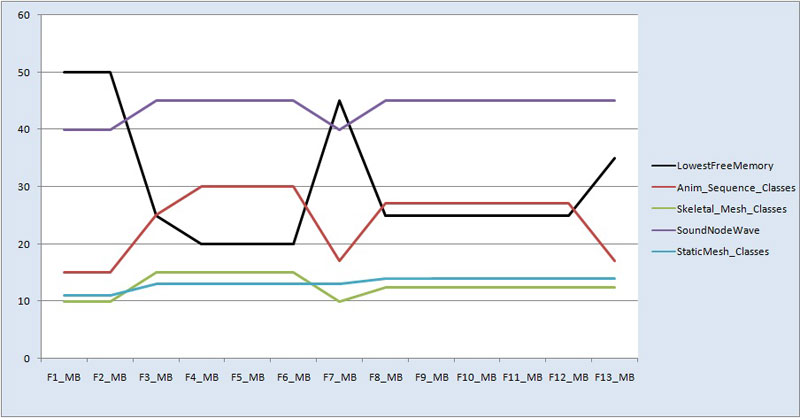

UDN
Search public documentation:
HotSpotReportGenerationCH
English Translation
日本語訳
한국어
Interested in the Unreal Engine?
Visit the Unreal Technology site.
Looking for jobs and company info?
Check out the Epic games site.
Questions about support via UDN?
Contact the UDN Staff
日本語訳
한국어
Interested in the Unreal Engine?
Visit the Unreal Technology site.
Looking for jobs and company info?
Check out the Epic games site.
Questions about support via UDN?
Contact the UDN Staff
热点报告生成
概述
创建未使用的 MemLeakCheck 数据
- 加载 UnrealConsole 然后连接到将用于此次测试的游戏实例。
- 在您计划从中捕捉数据的版本中启动 DebugConsole 可执行函数。
- 加载进入您计划为其捕捉数据的 SP 关卡。
- 进入关卡中后，使用下面的命令：
这里面的 30 表示 memleakcheck 捕捉数据之间的时间间隔（秒数）。如果需要，您可以增加或减少频率，但是为了随时可以正确追踪趋势，您通常需要使这个数字保持一致。
DoMemLeakchecking 30 - 在 P 关卡要发生改变的时候打开
统计数据关卡追踪功能。 - 经过整个 P 关卡转换到下一个 P 关卡。
- 在 2 捕获进入 P 关卡后，您转换返回主要菜单和/或重新启动。
- 在开始另一个关卡捕获数据前通常会重新启动。
- 根据列出的平台将 memleakcheck 文件创建在下面的文件夹中：
- 对于 PC/UDK：
[install]\[GameName]\Profiling\MEMLEAKS - 对于 iOS（将文档目录备份到 PC 中）。请参阅部署工具了解有关备份文档目录的信息。):
[install]\[GameName]\iOS_Backups\[DeviceName]\Profiling\MemLeaks
- 对于 PC/UDK：
- 每个 memleakfile 将会被解析到在以它开始运行的关卡命名的文件夹中。
例如，如果您在 关卡-a 中开始捕捉数据，然后进入 关卡-b 和 关卡-c 捕捉数据，整个运行过程将会在 关卡-a 文件夹中。
- 将这些 memleakcheck 文件/文件夹复制到可以轻松到达的位置。
创建可以从中获取数据的 CSV
- 从下面的文件夹中启动 memleakcheckdiffer.exe：
..\Binaries\ - 在 MemLeakCheckDiffer 中，选择
文件 > 打开文件夹及其子文件中的所有 Memleak 文件 - 浏览并导航到您放置您的 memleakcheck 文件的位置。
- 等待文件夹填充 MemLeakCheckDiffer。
- 只要所有文件夹完成填充了 MemLeakCheckDiffer 窗口之后，请立即选择
生成全面报告。 - 将会生成每个关卡的 CSV，同时还会创建一个 GlobalSummary CSV。
- CSV 位于放置您的 MemLeakCheck 文件的文件夹内部。
全面趋势数据解析
- 在 Excel 中打开 GlobalSummary 电子表格。
- 为了更加轻松地查看内容数据，隐藏除下面内容之外的所有代码行：
- LowestTFP
- AnimSequenceClasses
- SkeletalMesh_Classes
- SoundNodeWave
- StaticMesh_Classes
- 高亮显示这 5 行以散列表元名称开头以这一行最后一个值结尾的代码。
- 选择它们后，选择
插入 > 线图。 - 它可供您大致了解每个内容散列表元状态以及关卡内存整体趋势。
解析单独的关卡 CSV
为关卡设计师准备‘人性化’热点报告
加载下面的子关卡进行测试过程中达到的最低内存值是 20 MB：
在进行双列直插封装过程中，Anim Sequence Classes 增加了 15 MB，Skeletal Mesh Classes 增加了 5 MB，Sound Node Waves 增加了 5 MB 以及 Static Mesh Classes 增加了 2 MB。
以下是在进行双列直插封装第一部分的第三次和第六次捕捉数据之间动态载入的新子关卡：
在进行双列直插封装过程中，Anim Sequence Classes 增加了 10 MB，Skeletal Mesh Classes 增加了 2.5 MB，Sound Node Waves 增加了 5 MB 以及 Static Mesh Classes 增加了 1 MB。
在第 8 次和第 12 次捕捉数据之间进行第二次封装的过程中动态载入下面的子关卡：
- SP_Example_W
- SP_Example_02_boss
- SP_Example_02_S
- SP_Example_03
- SP_Example_04

第一个双列直插封装 下面的 bugit 位置会在进行该封装之前直接将您带到关卡区域：BugItGo -1858.2000 -2162.7903 1572.0010 64073 -16686 0=
- SP_Example _Cine
BugItGo 904.3768 261.3029 1761.1804 -4788 -20256 72
- SP_Example_02_boss
- SP_Example_02_S
- SP_Example_03
要标注的项
要避免的项
准备一个追踪热点报告
长时间运行
domemleakchecking 30 命令并尽量播放的时间长一些。在运行这些内存的过程中我们可以使用 reducepoolsize 运行，所以我们可以得到一段最长的时间。
使用这个数据，您可以比较运行和不断运行单独关卡之间的差异，从而得到这两者的内存 delta 基数。查看这个 delta 将会使您知道开始构建为单独关卡将需要的花费，而且会帮助定位可能会发生的任何内存泄露。